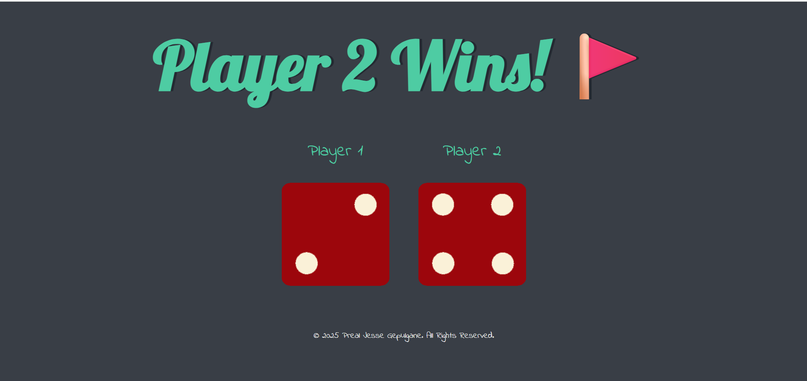

WEBSITES
"Crafting digital experiences with passion and precision."

🧠 Project Title: Dice Challenge
The website is a simple dice game built with HTML, CSS, and JavaScript. It simulates rolling two dice when the page is loaded or refreshed, displaying random images for each die. A heading at the top declares the winner based on which dice shows the higher number, or shows a draw if both numbers are equal. It’s a basic frontend project, likely created to demonstrate beginner-level DOM manipulation and logic handling.